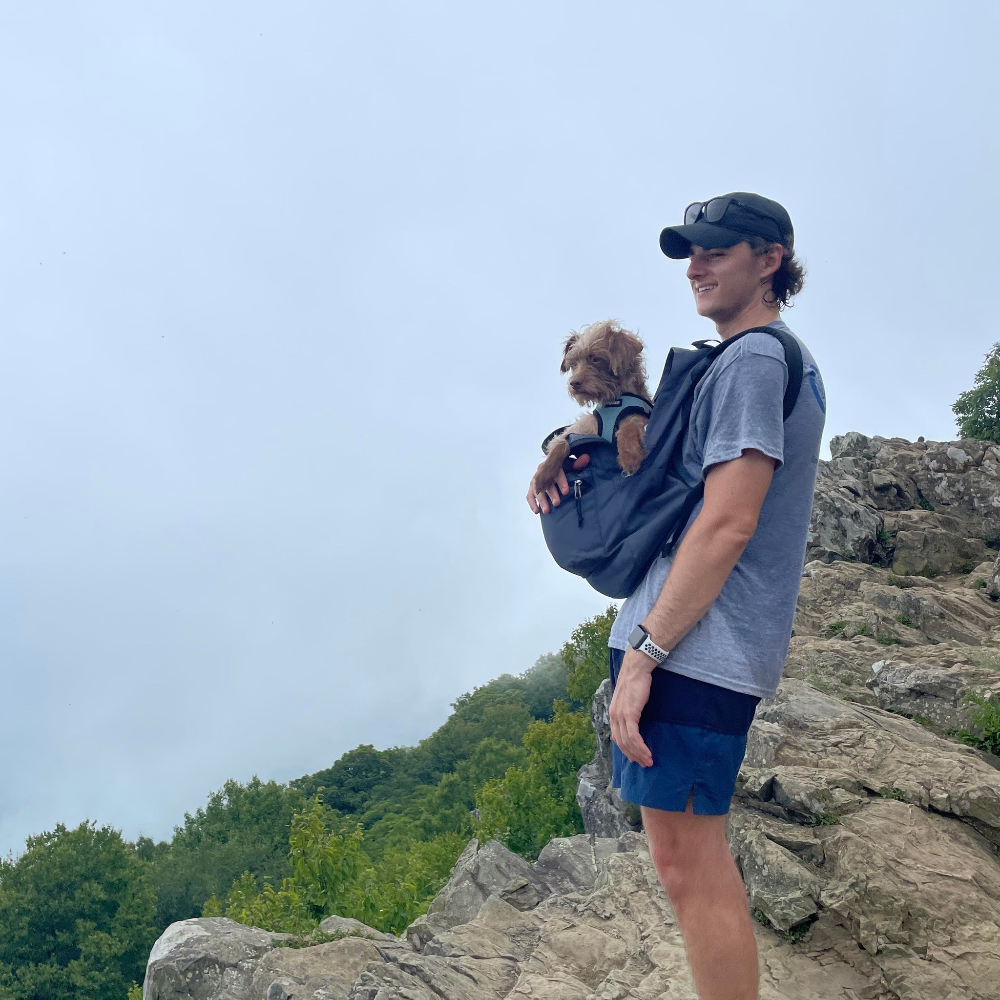

|  |
Sean LaceySenior Consultant @ Breakwater Solutions Beginning my journey to web development 💻! |
| Time Period | Location | Work Description |
|---|---|---|
| Mar. 2022 – Present | New York, NY | Senior Consultant at Breakwater Solutions |
| Oct. 2021 – Mar. 2022 | New York, NY | Consultant at Breakwater Solutions |
| Sep. 2020 – Oct. 2021 | New York, NY | Associate at Ankura Consulting Group |
| June 2019 – Aug. 2019 | New York, NY | Summer Associate at Ankura Consulting Group |
| May 2018 – Aug. 2018 | Malvern, PA | Sales Operations Intern for Frontile Education |
| Skill | Expertise Level |
|---|---|
| Google BigQuery | ⭐️⭐️⭐️⭐️⭐️ |
| Python | ⭐️⭐️⭐️⭐️ |
| Sourdough Baking | ⭐️⭐️⭐️⭐️ |
| Web Development | ⭐️ |